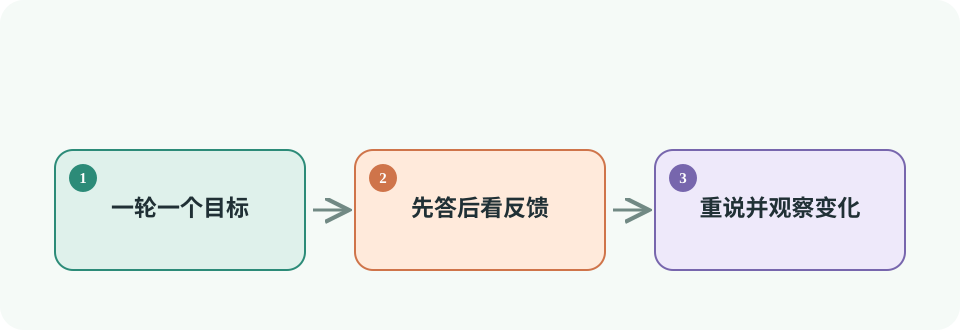
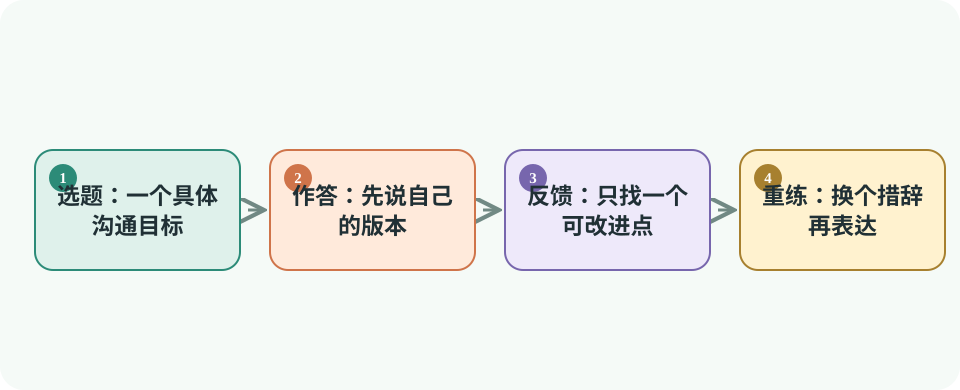

表达训练：从背话术到刻意练习
用真实回应、针对性反馈和重复演练，逐步建立可迁移的表达能力
01 · 从一个具体问题开始
阅读一段很好的回答，会让人产生“我懂了”的熟悉感；但当对方突然追问，脑中仍可能找不到合适的第一句话。理解表达结构和在压力下调用结构，是两种不同的能力。
一次练习只选一个可观察目标：例如先给结论、准确回应反问、说清边界，或明确下一步。先脱稿回答，再对照示范，最后重说一次。
02 · 把方法拆成可观察的动作
从理解对方、表达事实与需求，到确认行动和复盘，建立可迁移的沟通底层能力。 这些动作是教学工具，不是必须逐字套用的公式。

一轮一个目标
选一题，写下本次只练的一个动作。
先答后看反馈
隐藏参考，逐轮说出自己的回应。
重说并观察变化
对照示范，只记录一个具体改进点，再重说一次。
03 · 多轮案例：回应怎样随着信息推进
用现场问答案例说明：先说出自己的判断，再看示范如何处理证据范围与推广压力。
团队分享时被追问数据依据
分享一项两周、单团队知识库试点；有积极反馈，但尚无严格对照实验。
沟通目标：说明试点结果局限并提出第二轮验证。
你说这个试点有效，具体依据是什么？
目前只能说初步反馈积极。试点为期两周、只在一个团队开展；我还不能把这描述成已验证的整体效率提升。
那我们凭什么要推广到其他团队？
现在不建议直接全面推广。更稳妥的是选一个不同类型的团队做第二轮试点，提前定义指标，达到目标后再讨论扩大范围。
示范回应用于观察结构，不是唯一正确答案。真实沟通应根据事实、关系和风险调整。

04 · 交互拆解：逐步检查每个动作
选择一个动作，观察它解决的具体问题。所有步骤默认都在页面中可读；按钮只是帮助你聚焦其中一层。
怎样把沟通原则变成下一句话
一轮一个目标
选一题，写下本次只练的一个动作。
检查点：这一轮是否回应了对方刚刚提出的具体问题？
先答后看反馈
隐藏参考，逐轮说出自己的回应。
检查点：这一轮是否回应了对方刚刚提出的具体问题？
重说并观察变化
对照示范，只记录一个具体改进点，再重说一次。
检查点：这一轮是否回应了对方刚刚提出的具体问题？
当前聚焦第 1 步。
05 · 常见失误与适用边界
- 一次练习同时改太多维度，无法判断哪项改变有效。
- 先看标准答案再作答，产生熟悉感却没有真实提取。
- 只给自己打分，不记录下一次具体要改变的句子。
任何沟通框架都不能替代事实核查、正式流程、法律意见或现实安全判断。遇到不确定信息，应明确说出未知并约定核验方式。
06 · 把文章变成一次练习
建议用 10–15 分钟完成一题：读背景、隐藏参考、逐轮回答、选一个维度复盘，再把最难的一轮重新说一遍。这个时长是本站训练安排，不是研究证明的最佳剂量。
团队分享时被追问数据依据
在训练页打开这道案例，先隐藏参考、逐轮作答，再做四维自评。
07 · 来源与说明
本文区分外部框架、项目教学改编和案例示范。引用只支持来源中明确涉及的概念，不代表本文所有表达步骤均经过实验验证。
- Ericsson, Krampe & Tesch-Römer (1993) · The Role of Deliberate Practice in the Acquisition of Expert Performance · https://doi.org/10.1037/0033-295X.100.3.363（Psychological Review 100(3), 363–406）
本文的案例、步骤顺序、互动拆解和四维自评属于言习课程设计。项目自评用于个人纵向复盘，不是经心理测量验证的量表，也不是任何机构的认证课程。